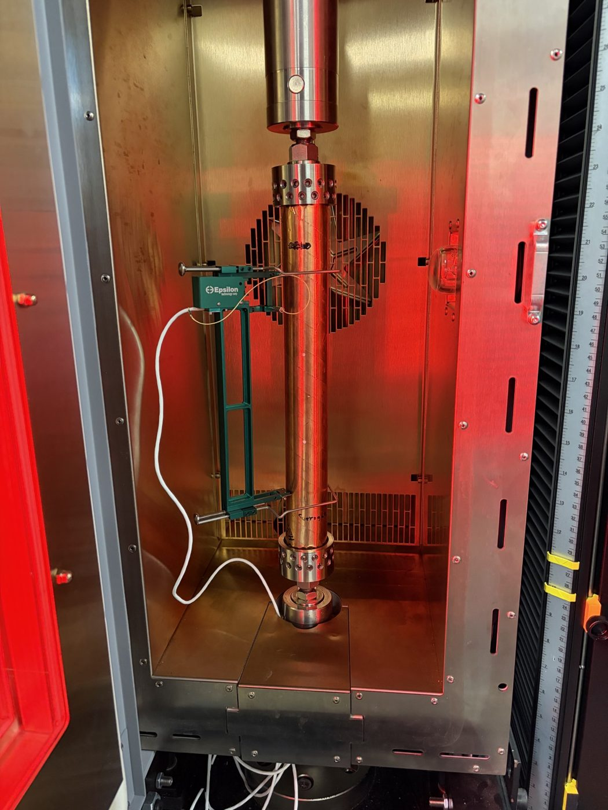
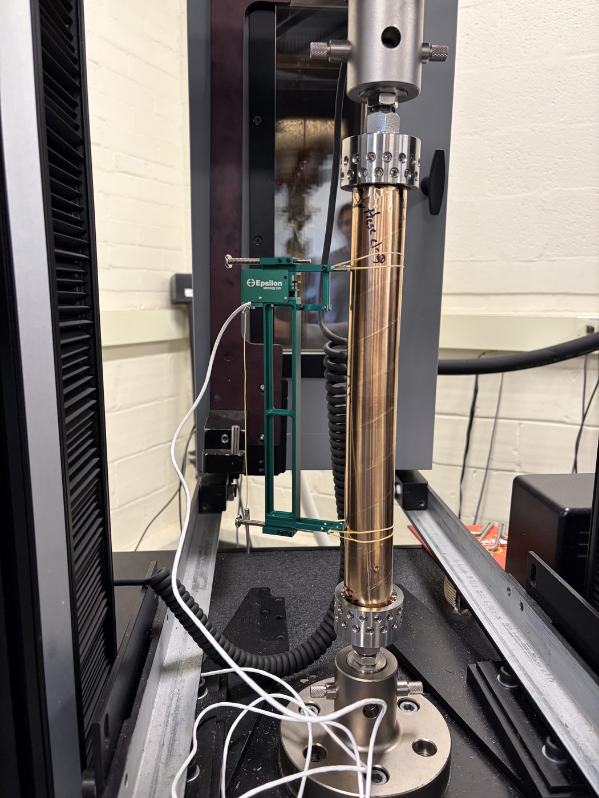
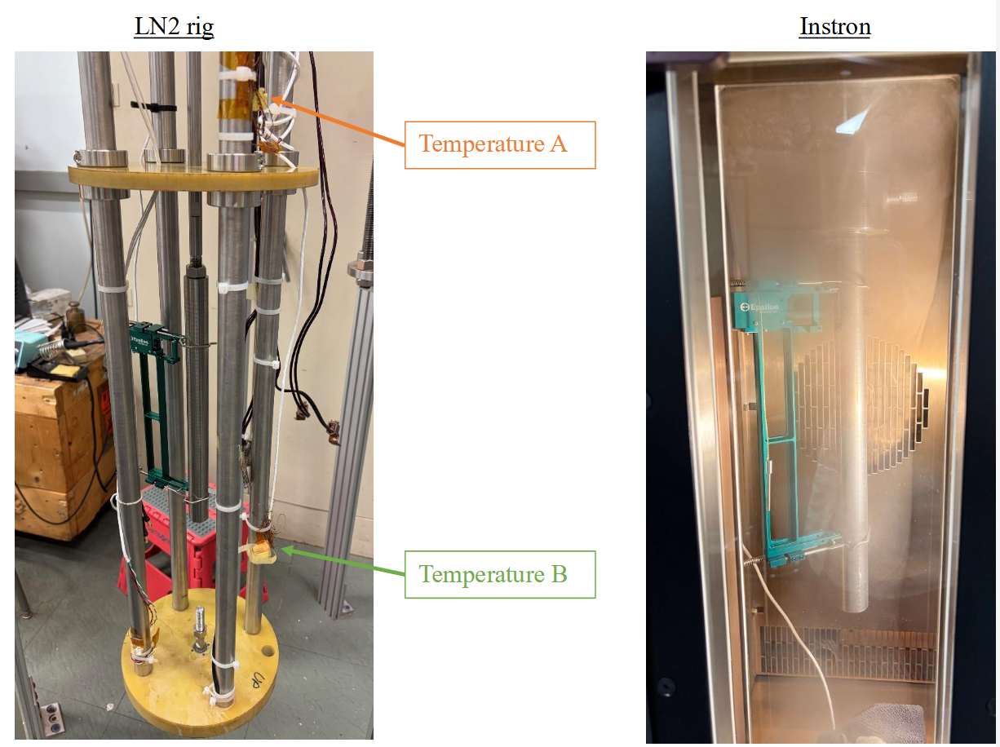

Mechanical Testing of Superconducting Cables
- Ran tensile tests on superconducting cables at room temperature, 173 K and 77 K.
- Used Instron temperature chambers, LN₂ rigs, extensometers and LabVIEW data acquisition.
- Calculated axial stiffness, permanent set and effective Young's modulus.
- Designed an experiment to measure extensometer contraction during cooldown, correcting CTE measurements.
Challenges
- The extensometer had no calibration factor for changing temperatures.
- Slightly bent samples shifted calculated axial rigidity by up to 30%, depending on extensometer position.
Lessons learned
- Troubleshooting complex testing setups to improve result accuracy.


